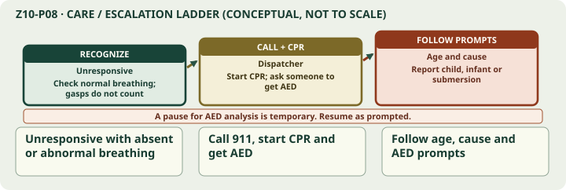

Z10-P08 · Wilderness medicine · New manuscript
Activate 911, AED, and dispatcher-guided CPR for cardiac arrest
Recognize sudden unresponsiveness without normal breathing and start immediate emergency resuscitation within lay training.
When it applies · Any person who is unresponsive and not breathing normally (including occasional agonal gasps).
Equipment · Phone/radio for 911 activation and an Automated External Defibrillator (AED) if reachable.

Actions
- Confirm the scene is safe, tap and shout firmly, and check for normal breathing for no more than ten seconds; treat absent or gasping breaths as cardiac arrest.[M03, T01]
- Call 911 immediately on speakerphone, send a bystander for an AED if near a trailhead or building, and begin firm center-of-chest compressions per certified CPR training or live 911 dispatcher coaching.[M03, T02]
- Power on an arriving AED immediately and follow its voice prompts while minimizing pauses in chest compressions until EMS takes over or clear signs of life return.[M03]
Failure recognition · Delaying 911 or compressions because occasional agonal gasping is mistaken for normal breathing.[M03]
Verify · Confirm 911 is active, compressions follow dispatcher or certified-course rhythm, and responders rotate every two minutes when teammates are present to prevent fatigue.[M03, ED]
Stop or change course · Stop compressions only if the scene becomes unsafe, clear normal breathing/movement resumes, an AED instructs hands-off analysis, or EMS assumes care.[M03, T01]
Evidence and editorial notes
- M03 · American Red Cross · CPR Steps and Emergency Response (current web edition)
- Section: Check, Call, Care; Unresponsive Person Without Normal Breathing · Conditions: Unresponsive person not breathing normally; lay responder with EMS activation
Support: Verify scene safety, check responsiveness and normal breathing, call 911 and retrieve an AED if available, and begin dispatcher-guided or trained CPR.
Limitations: Lay text reference cannot substitute for hands-on certified CPR/AED training. · Conflicting evidence: None; aligns with AHA/ARC bystander guidance.
Editorial note: Distinguishes lay activation and dispatcher-guided CPR from advanced life support. · Specialist reviewer: EMS and resuscitation specialist
Primary source · checked 2026-11-24 - T01 · American Red Cross · First Aid Steps (current web edition)
- Section: First Aid Steps > Check the scene; check the person · Conditions: Lay responder in United States; assess safety before contact
Support: Check scene safety, responsiveness, breathing and immediately life-threatening conditions.
Limitations: Lay guidance does not replace advanced clinical or rescue protocols. · Conflicting evidence: None; universal first-response opening gate.
Editorial note: Anchors scene-safety-first rule across Z01. · Specialist reviewer: EMS and wilderness medicine
Primary source · checked 2026-11-24 - T02 · American Red Cross · First Aid Steps (current web edition)
- Section: First Aid Steps > Call 9-1-1 · Conditions: Lay emergency response to unresponsiveness, abnormal breathing or severe bleeding
Support: Activate EMS and get needed equipment. Follow dispatcher directions and act within training.
Limitations: Remote locations may delay EMS arrival, requiring sustained stabilization after activation. · Conflicting evidence: None; aligns with NPS-E.
Editorial note: Mandates early emergency activation and dispatcher adherence. · Specialist reviewer: EMS and wilderness medicine
Primary source · checked 2026-11-24
Source lineage · American Red Cross CPR Steps; new manuscript · Classification · New manuscript.